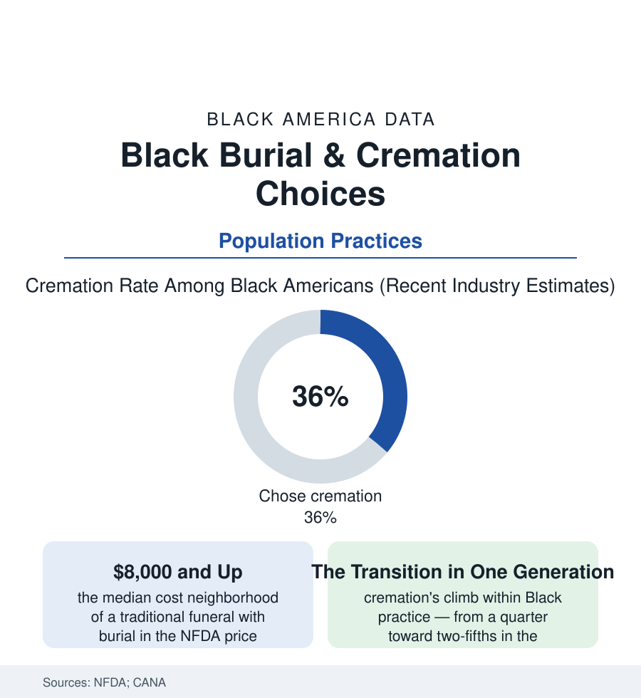

Black Census
The Homegoing Ledger: Burial, Cremation, and the Economics of the Last Ceremony
America now cremates more than it buries — but Black families still choose burial at far higher rates, and the funeral data record both a theology and an industry in transition. The homegoing file.

The last demographic act is a disposition, and America has changed its mind about it: the national cremation rate passed burial in the past decade and keeps climbing toward two-thirds in the industry's projections. Black America, in the funeral data, has changed its mind more slowly — burial retaining a hold, and a meaning, that the trend lines respect even as they move. This article reads the homegoing file: what a people's funeral choices measure about faith, money, land, and memory.
The Burial Tradition's Foundations
The numbers carry their reasons on their face in the research: the theology first (the Black church's resurrection doctrine and the body's dignity in the faith file's data — the funeral as homegoing, a worship service with a casket at its center, the open-casket viewing a liturgy older than the industry; the denominations' guidance shifting only gradually, the pastors' ambivalence in the clergy surveys the mirror of the pew's), the land second (the family plot — the churchyard and the Black-owned cemetery of the business file — an asset and an anchor: the generations stacked in one Georgia or Carolina ground constituting an argument no price list answers, the burial as return), and the history beneath both (the funeral as the one ceremony slavery could not fully regulate and Jim Crow would not serve — the burial society's dues, the lodge's death benefit, the insurance file's founding policies: the homegoing elaborated, across two centuries, into the community's supreme production, its flowers and its programs and its repast a public accounting of a life's worth, in a world that undervalued that life in every other ledger). The economics sit inside the meaning rather than against it in the consumer data: the traditional funeral's median price in the national surveys running past eight thousand dollars before the plot and the stone — a sum the family mobilizes through the insurance policy bought for exactly this, the pre-need contract of the funeral business file, the passing of the hat the community still knows. The industry's own consumer research records the satisfaction paradox that sustains the spending: the families who bury reporting the ceremony's worth at rates the cremators' families match only when the memorial service is kept — the ritual, not the disposition, being the load-bearing wall.
Cremation's Climb and What Moves It
And still the line climbs — the Black cremation rate rising from the mid-twenties toward the high thirties in a decade of the CANA statistics, its drivers itemized in the industry and academic data: price first (the direct cremation at a fraction of the burial's cost, the same inflation file squeezing the last purchase as it squeezed all the others — the funeral poverty literature's accounts of families fundraising for burials arriving, in the crowdfunding era, as the era's most-shared grief), migration second (the family plot receding across the return-migration map — the Chicago-born grandmother whose ground is in Mississippi she left at six, her grandchildren's cremation decision a geography decision wearing a theology's clothes, the ashes portable in a way the grave is not: the urn on the mantle as the mobile era's family plot), the church's slow doctrinal thaw third (the megachurch era's pragmatic acceptance in the clergy data), and the preplanning generation last (the boomers of the aging file arranging their own simpler exits in the pre-need data — the children spared the decision being the gift the arrangement names). The funeral business file records the industry's adaptation: the Black funeral home — the burial institution — adding crematories and celebration-of-life halls, defending its century with the new century's menu. The disposition data's projection lines, extended, converge within a generation or two; the file's interest is in what the convergence costs and keeps: the cemetery land's future, the ritual's reinvention, the question of where a scattered people's ancestors will be findable — the genealogy file's researchers already noting the urn's archival problem, the ashes scattered leaving no stone to photograph.
Reading the Homegoing Data
A culture can be read in how it spends on its dead, and Black America's ledger — the insurance bought in dimes, the plots held across migrations, the services that run long because the life must be fully told — is among this atlas's most eloquent. The cremation curve now bends through it, economics and distance pressing against theology and land. The NFDA publishes the percentages. The homegoing programs, printed and kept in family Bibles, publish the rest.
More in Black Census
The Black Population of the United States: Size, Definitions, and Distribution
The Black population of the United States totals 52.8 million — 15.4 percent of the nation. How the Census Bureau defines and counts the population, and where it lives.
Black Median Household Income in the United States
Black median household income stands at $56,490 in the Census Bureau's annual income report — how the figure is measured, how it compares, and what drives it.
The Black Poverty Rate: Levels, Children, and the Long Trend
The official Black poverty rate is 17.1 percent — against 11.1 percent nationally and 7.7 percent for non-Hispanic White Americans. How poverty is measured and what the data show.
Source: National Funeral Directors Association consumer and cremation reports; Cremation Association of North America annual statistics; National Funeral Directors Association; Federal Trade Commission funeral industry data.